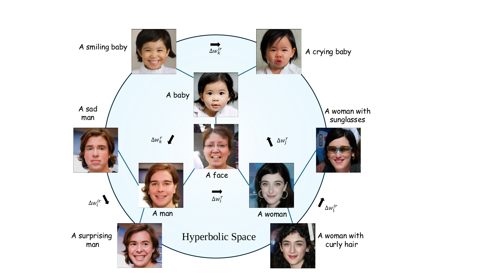
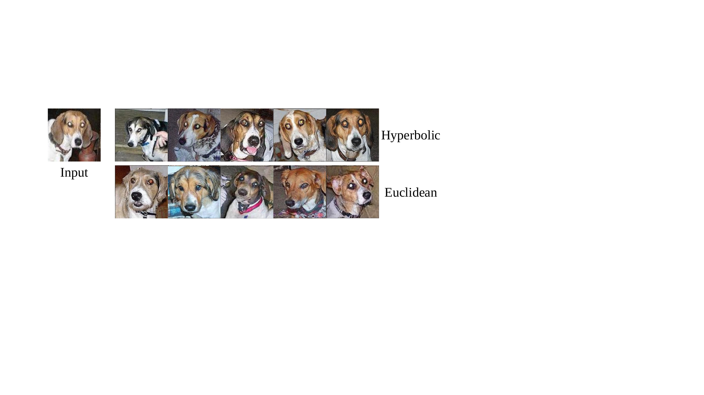

HypDAE: Hyperbolic Diffusion Autoencoders for Hierarchical Few-shot Image Generation

Few-shot image generation aims to generate diverse and high-quality images for an unseen class given only a few examples in that class. A key challenge in this task is balancing category consistency and image diversity, which often compete with each other. Moreover, existing methods offer limited control over the attributes of newly generated images. In this work, we propose Hyperbolic Diffusion Autoencoders (HypDAE), a novel approach that operates in hyperbolic space to capture hierarchical relationships among images from seen categories. By leveraging pre-trained foundation models, HypDAE generates diverse new images for unseen categories with exceptional quality by varying stochastic subcodes or semantic codes. Most importantly, the hyperbolic representation introduces an additional degree of control over semantic diversity through the adjustment of radii within the hyperbolic disk. Extensive experiments and visualizations demonstrate that HypDAE significantly outperforms prior methods by achieving a better balance between preserving category-relevant features and promoting image diversity with limited data. Furthermore, HypDAE offers a highly controllable and interpretable generation process.
Generative models have succeeded in generating high-fidelity and realistic images, partially thanks to a large volume of high-quality data for model training. However, with the widespread presence of long-tail distributions and data imbalances across image categories, there are many scenarios in the real world where it is impossible to collect sufficient samples of certain categories for model training. It is difficult for generative models trained on well-sampled categories to generate realistic and diverse images for a novel category given only a few examples. This challenging task is known as few-shot image generation, which aims to synthesize images that preserve the category-level identity of the limited input samples.
Existing few-shot image generation methods are primarily GAN-based and fall into three categories: transfer-based approaches, which use meta-learning or domain adaptation for cross-category generalization but often face limited transferability; fusion-based approaches, which fuse features from multiple exemplars but tend to produce outputs overly similar to the inputs; and transformation-based approaches, which apply intra-category perturbations without fine-tuning but often lack diversity.
In contrast to prior methods, recent work highlights the importance of modeling hierarchical structures in few-shot image generation. Similar to language, images also exhibit semantic hierarchies, where each image can be viewed as a composition of attributes at different levels. High-level, identity-relevant attributes (e.g., gender or age) define the semantic core of a category, while low-level, identity-irrelevant attributes (e.g., expression or hairstyle) introduce intra-class variation. Capturing this hierarchical organization is essential for generating diverse yet category-consistent images. Hyperbolic space provides a natural embedding for such structures, as it can represent tree-like relationships with low distortion.
Illustration of the property of hyperbolic space on the Poincaré disk. Given two latent codes of Maltese dog on the edge of Poincaré disk, the geodesic between these two points is the red curve rather than a straight line in Euclidean space. Therefore, their average latent code is calculated closer to the center, which can be viewed as the "parent" of the child codes. One can generate diverse images without changing the category by moving the latent code from one child to another of the same parent in the hyperbolic space.
We design a two-stage model for HypDAE: 1) In Stage I, a diffusion autoencoder maps input images to meaningful latent codes, serving as conditions for the pre-trained Stable Diffusion (SD). To enhance diversity and prevent direct replication, a content bottleneck and strong augmentation techniques are applied. 2) In Stage II, a hyperbolic encoder-decoder projects visual features from Stage I into hyperbolic space using supervised classification loss and then reconstructs them in Euclidean space. This process captures hierarchical relationships within the image corpus, facilitating the generation of diverse images by manipulating latent codes within the same category.
The overview of HypDAE. The hyperbolic autoencoder consists of a "semantic" encoder that maps the reference image to the semantic code (x→c), and a stable diffusion model that acts both as a "stochastic" encoder (x→z_T) and a diffusion decoder ((c′,z_T)→x′). Here, c captures the high-level semantics while z_T captures low-level stochastic variations; they can be decoded back with high fidelity. The semantic code can be edited and used as the condition for the diffusion decoder to generate diverse new images with the same category.
To manipulate latent codes in hyperbolic space, we define a bijective map from R^n to D^n to map Euclidean vectors to the hyperbolic space and vice versa. The exponential map maps from the tangent spaces into the manifold, while the logarithmic map is the reverse operation. This enables us to perform optimization in the tangent space while maintaining the geometric properties of the hyperbolic manifold.
We evaluate HypDAE on multiple few-shot image generation benchmarks including Animal Faces, Flowers, VGGFaces, and NABirds datasets. HypDAE demonstrates superior performance in generating diverse and high-quality images while maintaining category consistency.
One-shot image generation from HypDAE on Animal Faces, Flowers, VGGFaces, and NABirds. Our method generates diverse and high-quality images that preserve the category-level identity while introducing meaningful variations.
Hierarchical generation results showing controllable diversity. By adjusting the radius in hyperbolic space, we can control the semantic diversity of generated images while maintaining category consistency.
Qualitative comparison with state-of-the-art few-shot image generation methods. HypDAE achieves better balance between category consistency and image diversity compared to existing approaches.
HypDAE enables various downstream applications including controllable image editing and semantic interpolation in hyperbolic space.
Image editing applications. HypDAE enables fine-grained control over semantic attributes while preserving the overall identity of the generated images.
We conduct comprehensive ablation studies to validate the effectiveness of each component in HypDAE.
Ablation study on key components of HypDAE. The study demonstrates the importance of hyperbolic space representation and the two-stage architecture for achieving high-quality few-shot generation.
Additional generation results from HypDAE. Our method consistently generates high-quality and diverse images across different categories while maintaining semantic consistency.
@misc{li2024hypdae,
title={HypDAE: Hyperbolic Diffusion Autoencoders for Hierarchical Few-shot Image Generation},
author={Lingxiao Li and Kaixuan Fan and Boqing Gong and Xiangyu Yue},
year={2024},
eprint={2411.17784},
archivePrefix={arXiv},
primaryClass={cs.CV}
}
Acknowledgements: We thank DreamBooth for the page templates.